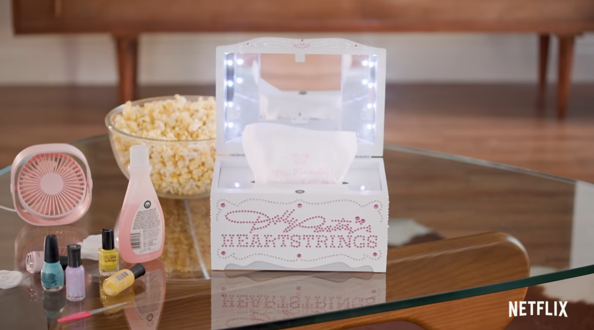
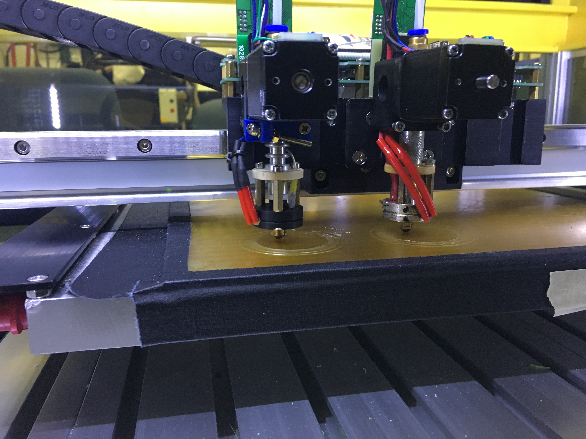

Gecko Robotics
Mechanical Engineer 1
Future full-time position designing industrial inspection robots that climb vertical surfaces.
Deeplocal
Mechanical Engineering Intern
An interactive design to exhibit shoes at the Footlockers flagship store in New York.
Created aspects of Nike’s shoe exhibit’s mechanical design and fabrication of the interactive lights.
An automated system that dispensed tissues during tearful moments for Dolly Parton's show on Netflix called Dolly Heartstrings.
Developed and prototyped the design of an autonomous tissue dispenser for Netflix’s Dolly Heartstrings.

An internship program for high school girls interested in STEAM to inspire creativity and provide hands-on technical experiences for them.
Structured and mentored the first STEAM Academy, a project-based internship to inspire high school girls.
Ford Motor Company
Additive Manufacturing Research Intern
CBAM is a new method of 3D printing created by Impossible Objects Inc., by layering polymer powder between unwoven carbon fiber matrixes.
Researched, optimized, and evaluated the material properties and printing process of a composite 3D printer.
A multiheaded printer that is capable of printing FDM composite materials that incorporates standard filaments, flexible materials, high-temperature plastics, and elastomers.
Investigated a multiheaded composite printer while producing prints on Carbon and Fortus machines.
Trained Ford personnel, collaborated with the suppliers, and developed standard operating procedures.
HEBI Robotics
Mechanical Engineering Intern
Created a syringe-based pneumatic claw and delta robot while testing limitations of actuator configurations.
BoXZY
Maker Intern
Researched plastic filaments and food molds on the CNC/3D Printer/Laser cutter using Fusion 360.